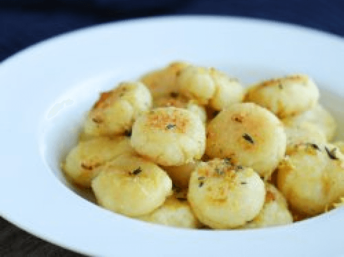

Keto Gnocchi (V)
(30 Min, 3 Port., F: 44 g, K: 6 g, E: 22 g)

Zutaten
Für die Gnocchi:
- 200 g Mandelmehl oder gemahlene Mandeln, 200 g geriebener Käse, 50 g Butter, 1 Ei, 1 Eigelb Für die Sauce:
- 80 g Butter, 1 TL Zitronenfleisch, 1 TL frischer Thymian
Zubereitung
Für die Gnocchi:
- Mozzarella und Butter in einer Schüssel vermischen und 2 Minuten in die Mikrowelle stellen. Umrühren und eine weitere Minute in die Mikrowelle stellen.
- Teig mit einer Spachtel verkneten und kurz abkühlen lassen. Ei, Eigelb und Mandeln dazu geben. Weiter verkneten bis eine Masse entsteht.
- Den Teig in eine lange Rolle von ungefähr 2cm Breite formen und ungefähr 2 cm Stücke abschneiden.
- Teigstücke in Gnocchi-Form bringen.
- Gnocchi für 15 Minuten in die Tiefkühltruhe legen. Währenddessen einen Topf mit Wasser zum Köcheln bringen.
- Gefrorene Gnocchi 1-2 Minuten abkochen.
Für die Sauce:
- Butter in einer Pfanne zum Schmelzen bringen.
- Zitronenfleisch und Thymian dazu geben.
- Gnocchi in die Pfanne geben und 1-2 Minuten anbraten.
Originalrezept unter: Ibreatheimhungry.com